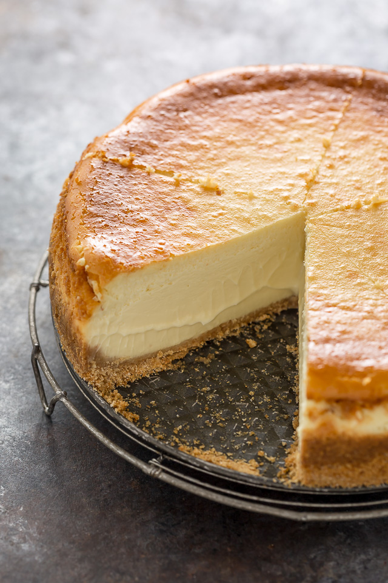

Baked Italian Cheesecake

Description
A slightly lighter version of cheesecake
without the crust!
While more difficult to make than their unbaked
counterparts it's definitely worth the effort
every once in a while. Baked cheesecakes have a
lightness you just dont get from unbakes ones.
Ingredients
- 1.5 Pounds Ricotta Cheese
- 2 Cups Confectioner's Sugar
- 3 Eggs
- 1.5 Teaspoons Vanilla Extract
- 1.5 Teaspoons Almond Extract
- 1 Tablespoon Lemon Zest
- 0.5 Cup Lemon Juice
- 1 Tablespoon Orange Zest
Steps
- Preheat oven to 400 degrees F (205 degrees
C). Grease and flour one 9 inch round
springform or regular pan.
- Combine the ricotta, confectioners' sugar
and eggs. Blend well. Stir in vanilla,
almond extract, rum extract, lemon juice,
lemon zest and orange zest. Beat by hand
until smooth and creamy. Pour batter into
the prepared pan.
- Bake at 400 degrees F (205 degrees C) for
40 minutes, until golden. Place on a rack
and cool.
Nutritional Info
Per Serving: 179 calories; protein
8.1g; carbohydrates 23.6g; fat 5.8g; cholesterol
64.1mg; sodium 88.8mg.
Return To Main